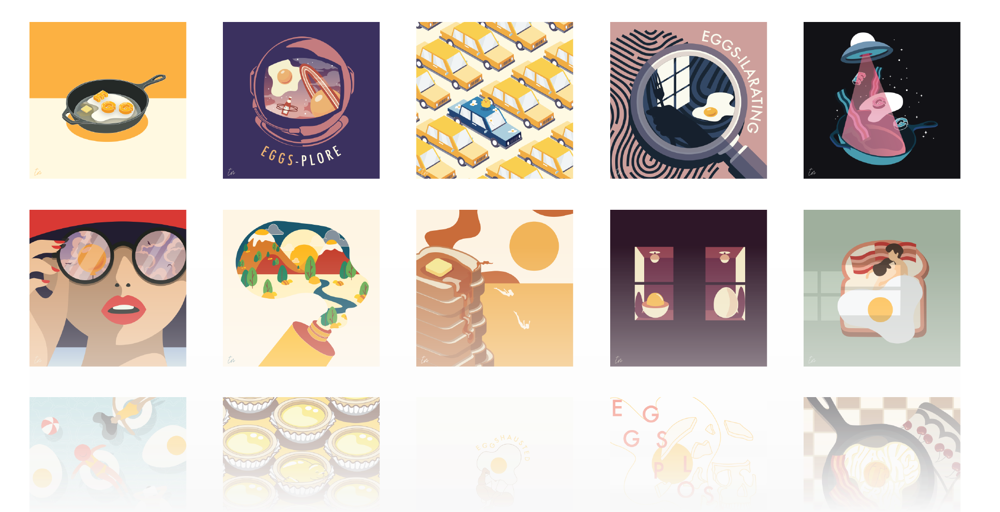
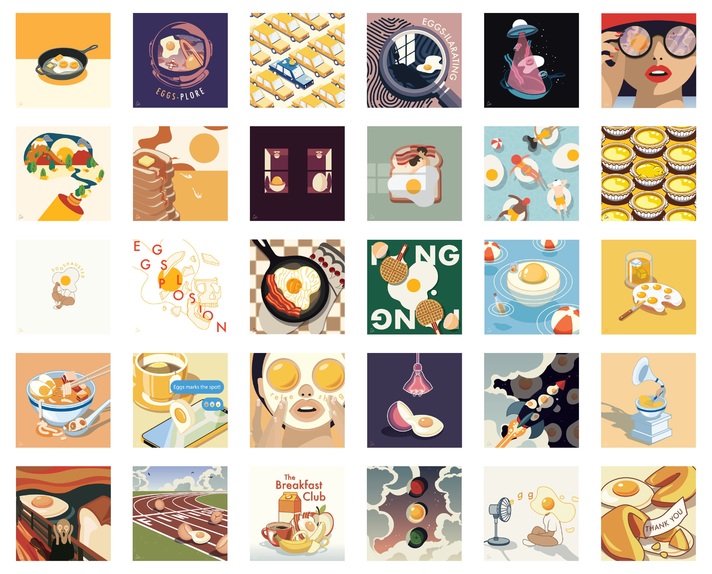

Personal Project — 2019
30 Days of Eggs

In the span of 30 days, I partook on the challenge of creating an original and quirky illustration every day, focused on the fluid and complex form of eggs.
Role
Graphic DesignerGraphic Illustrator
Team
Individual
Tools
Adobe DrawAdobe Illustrator
Timeline
30 days, May to Jun 2019

Objective
Ideation
30 days of planning.
Creating an illustration every day is time-consuming and stressful. I followed a step-by-step routine to help me organize my time efficiently while creating innovative illustrations.

Pinterest inspiration board.
Step 01 — Creating a mood board, list out ideas, look for inspiration
I mainly collected inspiration from daily life and Pinterest. As I began to start this challenge, I created a private board on Pinterest that would exponentionally grow as I continued this project. I also continually added onto my Note list whenever an idea happened to pop up.Step 02 — Sketch
Once I had an idea in mind, I would dabble more into it by producing quick sketches using my Apple Pencil and my iPad Pro.Step 03 — Creating the illustration
Finalizing my sketch, I would import it into my Mac and begin developing the illustration on Adobe Illustrator.Step 04 — The post
After finalizing the illustration, I would post the original illustration in png form with a close-up of the work, along with the initial idea I sketched up. My initial sketch was not always synced with the final result, but in a way, it brought a new flow of ideas to form while in the process of illustrating.Final

Outcome
Jumping into this project, I had already expected to expand my graphic design skills as well as adding on an additional project into my portfolio. Of course - I also expected that I would be mentally and creatively challenge, expanding my skills beyond the boundaries of comfort.
Looking back, having gone through the phases of burnout, imposter syndrome, artistic creativity, exploration, etc., I have inherently gained a sense of true accomplishment. Over the 30 days, I learned a lot on how I process and structure my mind when working, how I mentally got through the burnouts and stress, and more so about how I refined my skills and efficiency.
Looking back, having gone through the phases of burnout, imposter syndrome, artistic creativity, exploration, etc., I have inherently gained a sense of true accomplishment. Over the 30 days, I learned a lot on how I process and structure my mind when working, how I mentally got through the burnouts and stress, and more so about how I refined my skills and efficiency.
Thank you
Thank you to the people in my life who persistently encouraged me to create daily illustrations. Thank you to the people who post tutorials, giving those a creative outlet and learning platform. I am deeply motivated by all the creatives out there, in all mediums, who are consistently and persistently making things in volume.